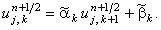

Как и схема переменных направлений
(11.8), схема предиктор-корректор (11.9) является
абсолютно устойчивой (абсолютную устойчивость схемы обеспечивает предиктор) и имеет
второй порядок аппроксимации по времени (благодаря наличию корректора). Таким образом,
в данном случае допускается такая же величина
шага итерации, как и при использовании схемы
переменных направлений
(11.8), для получения результатов с такой же точностью. Количество
итераций как и в случае схемы переменных направлений
(11.8) определяется соотношением:
Каждая из подсхем, входящих в состав предиктора, решается с помощью
метода прогонки. Коэффициенты, соответствующие уравнению
(4.10), имеют вид:
для первой подсхемы предиктора
для второй подсхемы предиктора
Легко видеть, что для обеих подсхем достаточное условие сходимости прогонки
(4.16) выполняется.
Алгоритм решения схемы предиктор-корректор (11.9), а также методики определения
прогоночных коэффициентов
и
решения на правой границе аналогичны описанным ранее.
Также как и в случае
метода простой итерации, в качестве нулевой итерации
(
начального условия, необходимого для решения в связи с
введением фиктивной производной по времени)
обычно задают свободный член:
Расчёт итераций следует продолжать до тех пор, пока
итерационный процесс не сойдётся, т.е. пока не будет
выполняться условие
(11.3), в разностном представлении соответствующее неравенству:
Итерационным выражением для подсхем, входящих в состав предиктора, является прогоночное соотношение
(4.11),
имеющее вид:
для первой подсхемы предиктора
для второй подсхемы предиктора 
Итерационное выражение для корректора имеет вид: